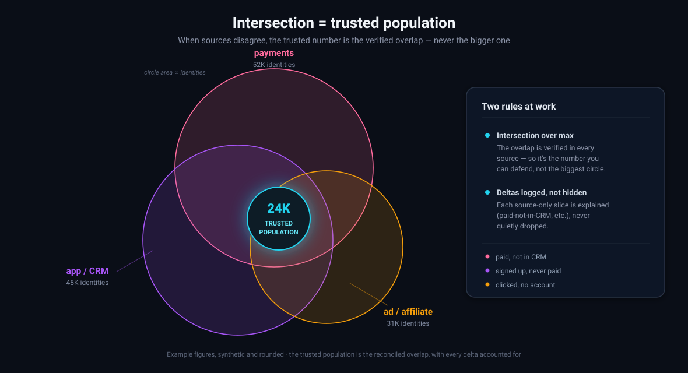
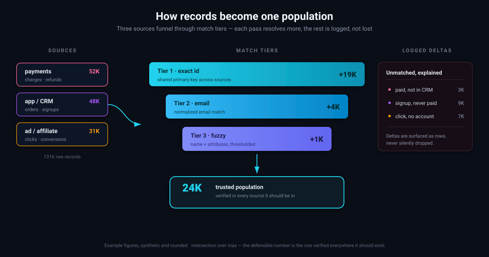
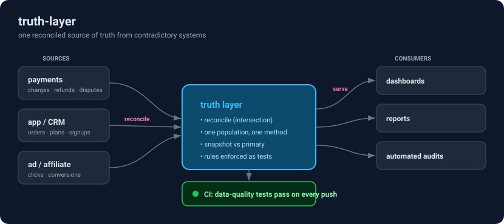

A single source-of-truth layer that reconciles payments, app/CRM, and affiliate data into one auditable population — with the counting rules enforced as tests in CI.
Three production errors — the reported number vs. the real one. Each was a definition bug, not a syntax bug.


